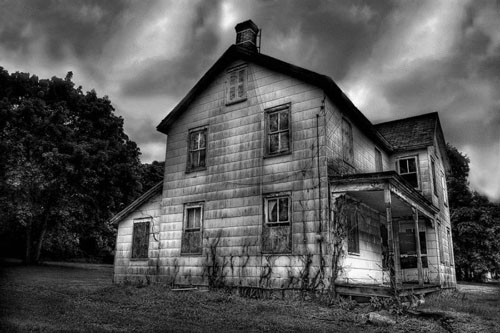

présente
Le chalet Georgie Tobby
Au cœur du territoire Apparacho, à 21 km de Dead Red City, la ville la plus proche, le chalet Georgie Tobby se dresse sur une île située au beau milieu du Crystal Lake, le tout au sein des montagnes californiennes.Construit sur les ruines d’un ancien cimetière d’une tribu indienne isolée, la bâtisse nait en 1903 pour servir de lieu de refuge aux nombreux trappeurs de la région. La création du lac artificiel Crystal Lake en 1936 et la construction d’un camp de vacances aux abords de celui-ci permet à l’endroit de devenir l’un des lieux de détente privilégiés des habitants de Dead Red City.
Laissé à l’abandon après la deuxième guerre mondiale, le chalet connaît une seconde jeunesse avec son rachat par Serial Camping en 1972. Serial Camping en fait le point central de l’Apparacho Cimetary Holiday Camp.
Mais c’est en 1988 que le lieu rentre définitivement dans la légende avec l’incroyable histoire du garçon trop top mignon et sympa Georgie Tobby.

La légende de Georgie Tobby
1987 : Finale de la « Pingwin Cup », la compétition de Hockey la plus disputée de la Californie. L’équipe des Snowtigers de l’université de Beverly Hills affronte les Emperors de Berkley High School. Georgie Tobby est le gardien des Snowtigers. Il reste 5 minutes dans le temps réglementaire, les équipes sont à égalité. Georgie Tobby aperçoit sa fiancée Amber dans les gradins. Amber vient d’être élue miss Beverly Hills 88. Amber semble regarder dans la direction de Georgie Tobby. Celui-ci ne résiste pas : il enlève son masque et gratifie Amber de son plus beau sourire (le père de Georgie Tobby est le dentiste officiel de Chuck Norris).
C’est à cet instant précis que Bruce Chambers, le capitaine des Emperors arme un spectaculaire coup de crosse faisant voler le palet vers la cage de Georgie Tobby. L’histoire ne dit pas si c’est volontairement que Georgie Tobby a tenté d’arrêter le palet avec ses dents. Toujours est-il que, sous le choc, Georgie Tobby s’écroule sur la patinoire. La tête de Georgie Tobby ayant franchi la limite de la cage, et le palet se trouvant toujours dans sa bouche, l’arbitre accorde le point aux Emperors.
Ce sera le point du match.
Le soir même, Amber décide de quitter Georgie Tobby pour sortir avec Bruce Chambers.
Malgré tous les efforts de son père, Georgie Tobby ne retrouvera jamais son sourire ravageur ; il restera défiguré à vie, un affreux appareil dentaire venant briser l’harmonie de son visage (le poooooovre).

Georgie Tobby en 1987, quelques semaines avant son accident
C’est le début de la déchéance pour lui : il ne quittera plus le banc des remplaçants et deviendra la risée de ses petits camarades qui n’auront de cesse de l’affubler de surnoms tel que « sourire d’ange », « le requin » ou « la centrale électrique ». (le pooooooovre).
Mars 1988, l'équipe des Snowtigers gagne enfin la « Pingwin Cup » grâce à leur nouveau capitaine transfuge des Emperors : Bruce Chambers qui marque 8 buts en finale contre son ancienne équipe. (ce qui lui assura de sévères inimitiés).
Georgie Tobby fait toujours partie des Snowtigers mais unique fonction est de couper les citrons à la mi temps.
Comme le veut la tradition, toute l'équipe passe un week end pour fêter cette victoire. Elle aura lieu à l'Aparacho Cemetery Holiday's Camp ! En bref un week end cool avec en point d'orgue le fameux bain de minuit où les Snowtigers sortent du chalet à minuit pile et se rendent au lac. Ils brisent la glace du lac pour prendre un bain glacial en se lançant un défi : le dernier sorti étant le gagnant (tradition estudiantine datant des premières Cup du siècle dernier). Les filles ne sont pas conviées à ce rite ô combien masculin mais source de nombreux fantasmes pour elles.
Pour Georgie Tobby, c’est l’heure de la rigolade : toute cette année d’humiliations, il va la faire payer à ses camarades en commençant par cette rigolote d’Amber.
Il s'est confectionné uen magnifique sucette géante avec sa crosse qu'il a bien nettoyé et porte un superbe bleu de travail (certainement pour ne pas se salir avec le sucre d'orge de ses futures amies).
La première amie sera Amber Pauli qui était en train de se faire une beauté dans la salle de bains afin de plaire à son fiancé Bruce. C'est Chandra Hurless qui découvre le maquillage de sa meilleure amie. Complètement défigurée et un bonbon dans la bouche. Chandra se demande alors ce qui peut bien bouger derrière le rideau de douche et ne peut s'empêcher de jeter un oeil. Elle n'a pas le temps d'hurler de joie que Georgie Tobby la prendra dans ses bras.
[Depuis sur la salle de bain du chalet, il y a une petite plaque sur la porte « Amber Pauli & Chandra Hurless»].
Georgie Tobby continue méthodiquement sa fête et prend dans ses bras la quasi-totalité des personnes présentes ce soir là.
Après toutes ces émotions, Georgie Tobby décide de partir en vacances aux Bahamas.
Tous ses amis feront de même sauf une jeune pom-pom-girl qui prefera quitter le chalet plus tôt.